RUNIT
A modular running belt built around one idea: one belt for every body. It adjusts in size to fit runners from the 5th to the 95th percentile, and in capacity, with pockets that attach wherever the runner needs them.
The brief was to create a running belt brand from the ground up, from the product itself to packaging, posters, social media and video adverts.
- Module
- Design for Industry, Year 2
- Team
- Group project
- My role
- Concept sketches, Illustrator and SolidWorks models, final renders
- Tools
- SolidWorks, Illustrator, Blender
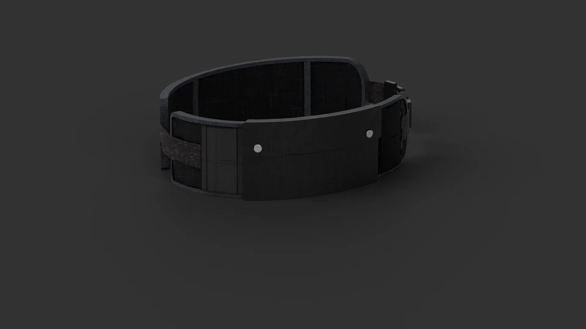
What runners actually carry
We interviewed runners from Strava and ran a questionnaire. Most respondents ran 10km or more, several times a week. They reached for their phone, water and keys most often, and most of them carried these in their hands or pockets, even though items shaking about was a common complaint. Only one interviewee used a running belt, and many skipped carrying water altogether because it was too awkward.
We also ran with two existing belts. The Karrimor's strap was too thin and wouldn't tighten enough, and its pouch moved around. The Dunsby rode up the waist and its buckle dug in. That set the requirements: carry two 500ml soft flasks, a phone, keys and gels, with no wobble, and adjust easily without stopping.
Designing for every body
Waist circumference ranges from about 60cm for a 5th-percentile woman to about 120cm for a 95th-percentile man, so the belt had to cover a two-to-one range. It is contoured into a slight cone to follow the difference between waist and hips, so it sits on top of the hips instead of riding up.
Water slosh was the other problem. Upright, a flask's water slams against the cap on every stride. Flat, it swings side to side like a pendulum. Tilting the flask pockets to 45 degrees makes the water run along the bottle's sidewall instead, which breaks up the wave before it forms.
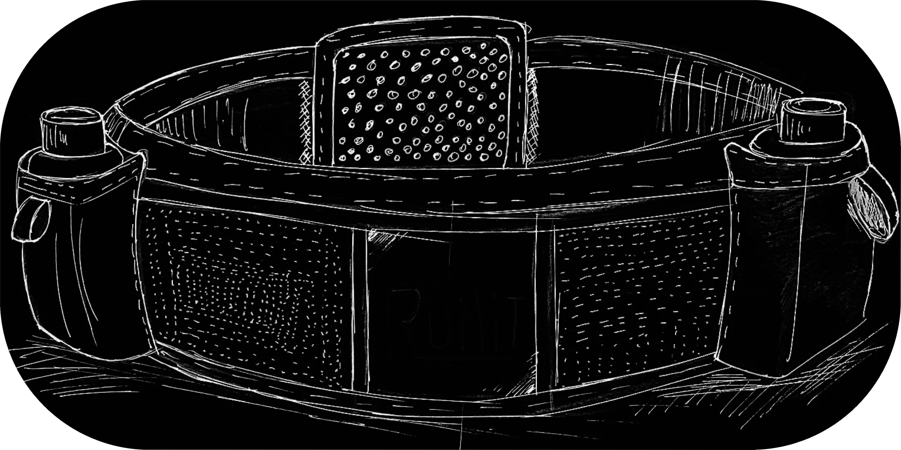
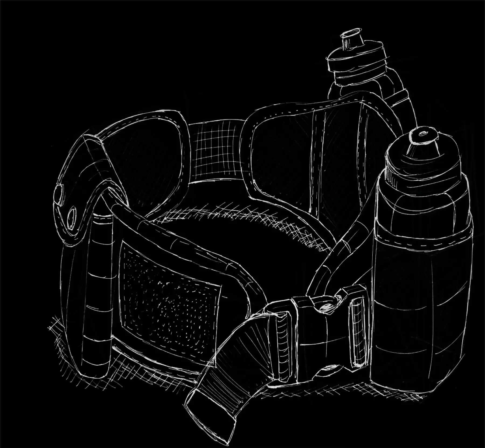
Prototyping the adjustment
The first prototype used a drawcord and toggle. It adjusted both tighter and looser and stayed out of the way of the pockets, but it needed two hands, the cord dangled, and it tightened the front fabric instead of the back.
The next prototype, in scuba fabric with stretch-mesh pockets, moved to dual side-release buckles so the front and back panels stay centred at every size. Pockets attach anywhere along vertical hook-and-loop strips, and the front pocket closes with metal poppers and fits any size of phone. To deal with dangling straps we tested three fixes: tri-glide clips (neatest, but two-handed and without enough range), rolled hook-and-loop webbing (secure but fiddly), and hook tape sewn onto the strap ends.
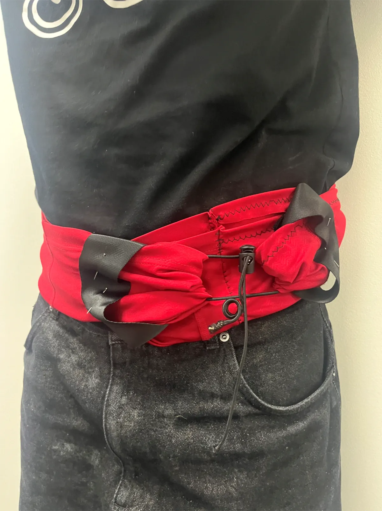
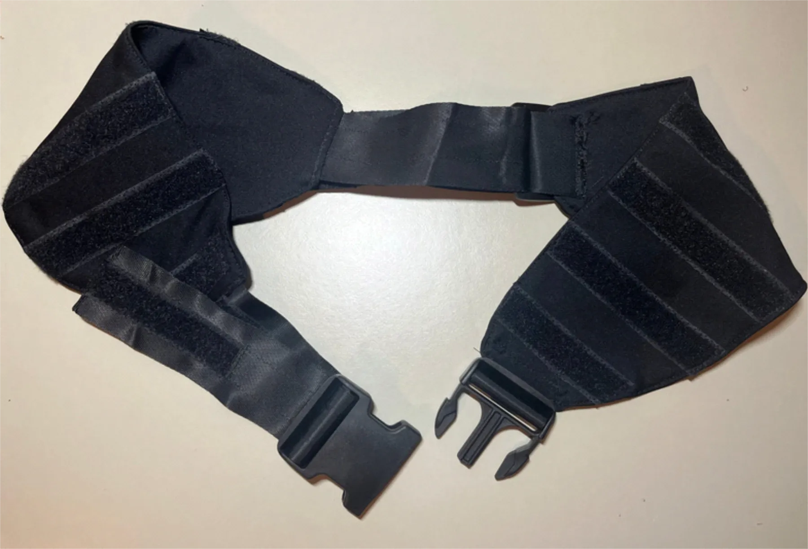
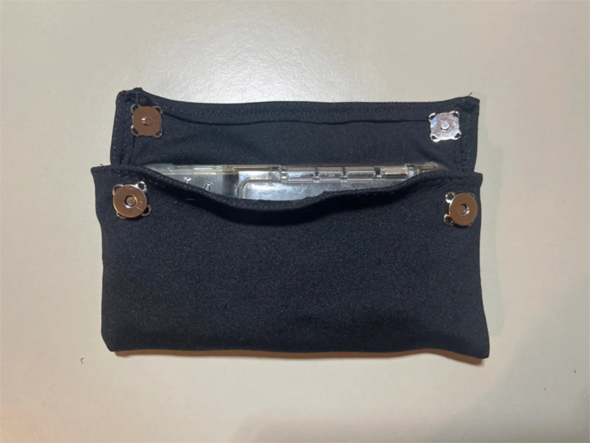
Run testing
We ran with the prototype for a minute without adjusting it, then again while adjusting on the move. It was comfortable, it felt balanced with the phone at the front and water at the back, and nothing jingled. But it still rode up and rotated, and the back bunched up when no pocket was attached. That gave us four fixes for the final design:
- Silicone gripper dots to stop the belt moving.
- PE foam stays to stop the back bunching.
- EVA foam flask supports to stop the flasks bouncing.
- Mushroom-head hook tape instead of standard hook-and-loop, so pockets stay put.
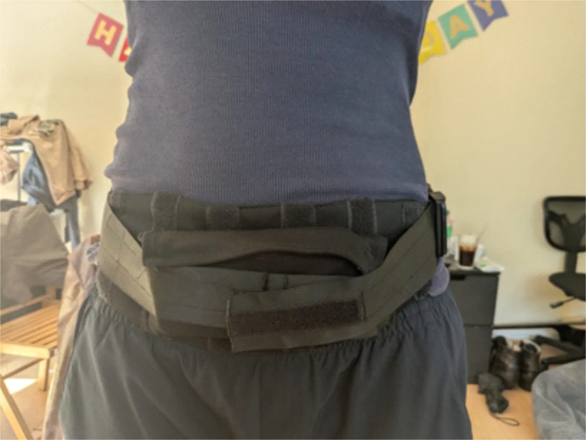
CAD and renders
I modelled the final belt in SolidWorks and produced the technical drawing. The materials are a 220gsm power-mesh chassis, a technical tricot lining, lightweight mesh pocket panels, closed-cell EVA flask supports that absorb no sweat, and PE foam stays.
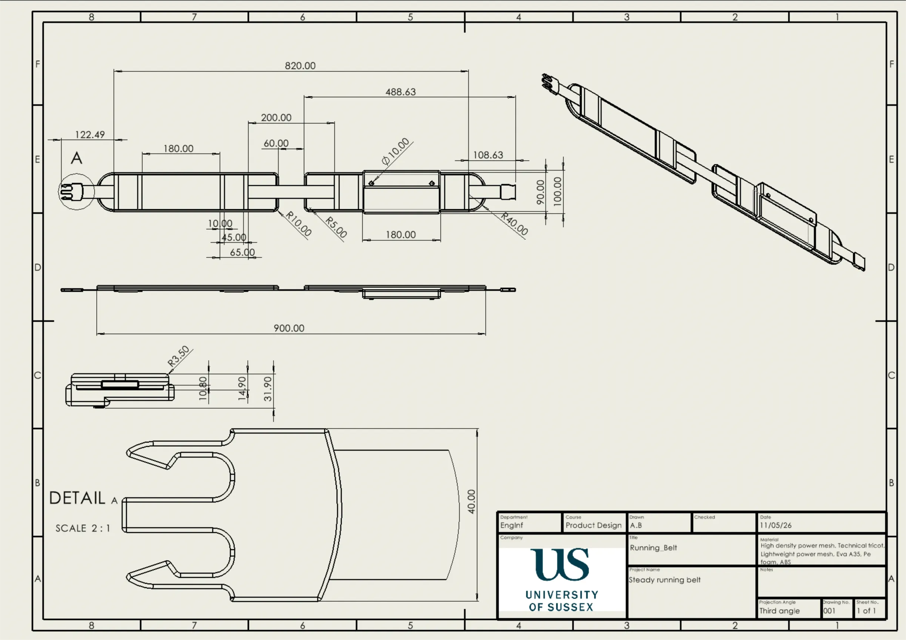
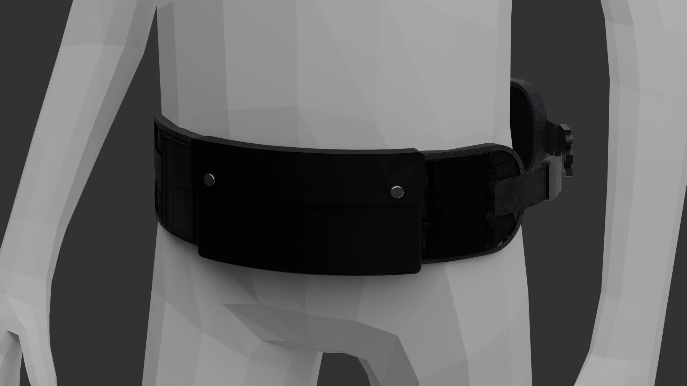
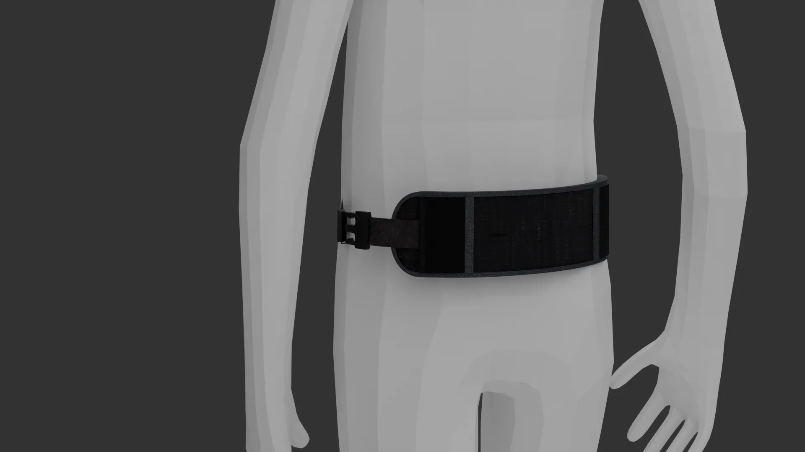
For the final renders I taught myself Blender from scratch. Getting its material nodes and lighting to show how stretch mesh and moulded plastic actually behave was a steep learning curve, but the renders are far closer to the real product than anything I had made before.
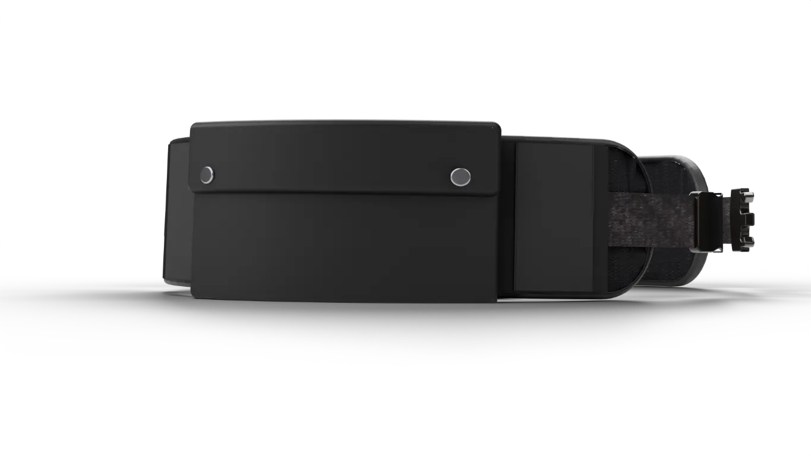
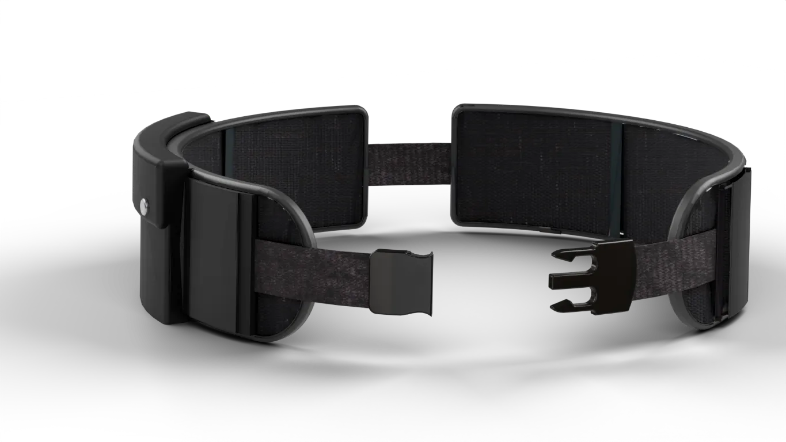
Brand
The name hides the word "unit", underlined in the logo, because the belt is built from modular units, while "Run it!" doubles as a tagline. The patches carry the brand on the belt itself, and the slogan is "Every belt, every body".
Midway through, a curveball brief made us drop RunIt and adopt another group's name and mascot, STEADY and a tortoise, to mirror a client change in industry. The name was fixed, but the logo could change, so I redrew my own version of the tortoise to suit the belt.
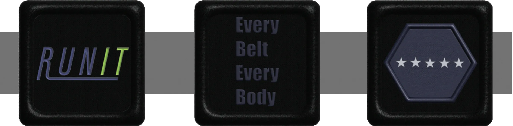
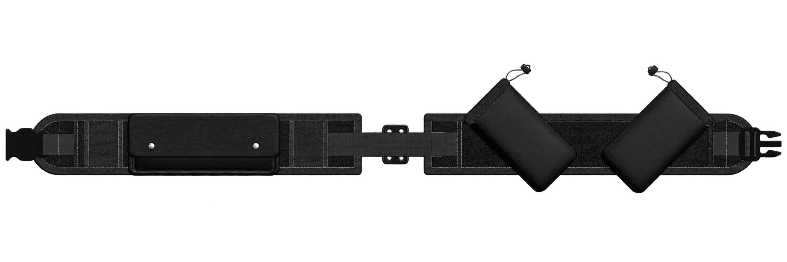
Team and reflection
The work was split evenly. I did the concept sketches, the Illustrator and SolidWorks models and the final renders, while other group members led the physical prototyping and the video. The curveball forced us to adapt to a brand we had not created, which is exactly what can happen with a real client.
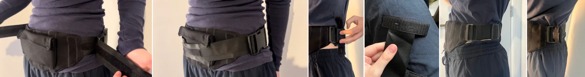